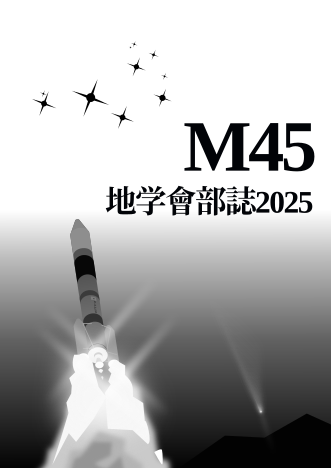
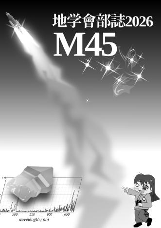

| トップ | 地学會について | つくったもの | とんぼ祭 | お問い合わせ | |||||
|
|||||||||

松本深志高校地学會のホームページです。

 地学會とは？
地学會とは？
松本深志高校地学會は、地学分野を広く扱う自然科学系の部活動です。
なにをするところ？
詳しくは、「地学會について」をご覧ください
 地学會部誌「M45」
地学會部誌「M45」
2010 --
毎年とんぼ祭で発行している部誌です！地学會や地学會員の1年間の活動がまとめられています。
デジタル版があればここに掲載します


地学會 可視光低分散分光器「FUKASIS」
2024 -- 2026
ポスター(第28回天文学会ジュニアセッション) GitHubのrepository地学會にも分光器が欲しい！という考えから2024年の冬に開発を開始し、2026年3月に完成した分光器です。特徴は、
です。この分光器に関するお問い合わせは@legrs4073まで
缶サット Fks-A
2024
機体の写真 ロケットの写真| ミッション： | リアクションホイールによる2軸姿勢制御 |
(おそらく)地学會初の缶サットです。
電子工作自体が初ということもあり、なかなか大変な思いをしました。
興味があればぜひ2025年の「M45」もご覧ください！
缶サット Fks-B-I
2025
機体の写真 地上局の画面| ミッション： | 小型人工衛星向けの衛星バスの開発(3軸姿勢制御・地上との相互無線通信・など) |
2回目ということで、比較にならないぐらいクオリティが向上しました。
缶サット甲子園の岐阜地方大会で技術賞(三等)をいただき、全国大会への出場が決まりました。Fks-B-IIへと進みます。
缶サット Fks-B-II
2026
機体の写真 地上局の画面1 地上局の画面2 シミュレータの画面| ミッション： | 商業的な超小型人工衛星バスの開発(3軸姿勢制御・地上との相互無線通信・太陽光発電・など) |
ある程度Fks-B-Iを踏襲していますが、ソフトウェアと基板は1から作りなおしたためかなり変わっています。
宇宙甲子園缶サット部門 全国大会でで技術賞をいただきました！
since 2026-04-15
================
Copyright © 2026 松本深志高等学校地学會